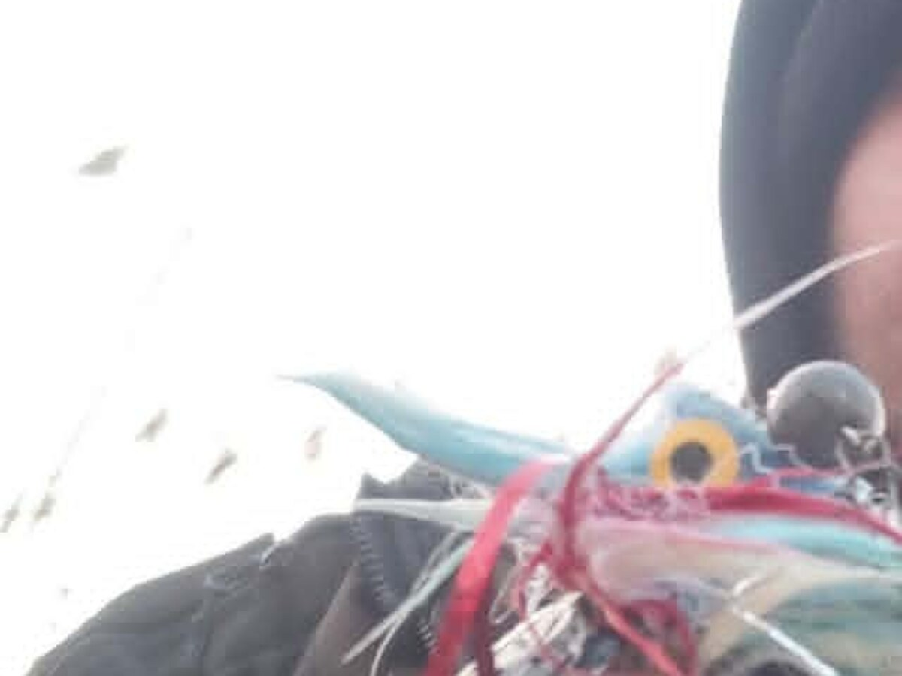

Przynęta ma pasować do warunków, nie do reklamy
Skuteczna przynęta to nie ta najdroższa czy najczęściej reklamowana, lecz ta, która pasuje do gatunku, głębokości, temperatury i przejrzystości wody oraz do aktywności ryb w danym dniu. Poniżej omawiamy najważniejsze grupy przynęt — od gum spinningowych, przez woblery i przynęty metalowe, po przynęty naturalne i zanęty feederowe — a na końcu podpowiadamy, jak dobierać kolor i rozmiar oraz jakich błędów unikać.
Gumy spinningowe
Rodzaje gum i ich zastosowanie
Przynęty gumowe (silikonowe) to dziś podstawa spinningu w Polsce. Rippery (shady) mają płetwę ogonową dającą rytmiczne kołysanie — to uniwersalny wybór na sandacza i szczupaka. Twistery kuszą falującym, sierpowatym ogonem i świetnie sprawdzają się na okonia oraz w wolniejszym prowadzeniu. Jaskółki (V-tail) i slugi (gładkie, bez aktywnego ogona) mają delikatniejszą, bardziej naturalną pracę, cenioną przy biernych rybach i czystej wodzie. Creature baity i imitacje raków obławiają dno i kuszą okonia czy klenia. Typowe długości to 5–8 cm na okonia, 8–12 cm na sandacza i 12–18 cm (a nawet więcej) na szczupaka.

Montaże gum
Najpopularniejszy jest montaż na główce jigowej — ołowiana główka z hakiem nadaje ciężar i sprawia, że przynęta opada „głową w dół", odbijając się od dna. Cheburashka (montaż zaczepowy z odczepianym ciężarkiem i osobnym hakiem) daje swobodniejszą pracę gumy i łatwą zmianę ciężaru. Drop shot, z ciężarkiem na końcu żyłki i hakiem powyżej, prezentuje przynętę w toni niemal w miejscu — to broń na biernego okonia i sandacza. Montaże texas i carolina (z kulką-ciężarkiem i hakiem offsetowym) są bezzaczepowe i pozwalają prowadzić gumę w gęstych zaczepach i roślinności.
Dobór ciężaru główki
Ciężar główki dobiera się do głębokości, siły nurtu i pożądanego tempa opadu. Im głębiej i im silniejszy prąd, tym cięższa główka potrzebna do utrzymania kontaktu z dnem; im płycej, wolniej i bardziej biernie żerują ryby, tym lżej. Praktyczna zasada: główka ma być na tyle ciężka, by wyczuć stuknięcie o dno, ale na tyle lekka, by opad pozostał powolny i kuszący. Zbyt ciężka główka „kamienieje" przynętę i odstrasza ostrożne ryby, zbyt lekka odbiera kontrolę i czucie dna.

Woblery
Pływalność i typy
Woblery dzielą się według pływalności na pływające (floating), tonące (sinking) i zawieszające się w toni (suspending). Suspending są wdzięczne przy wolnym, „szarpanym" prowadzeniu, bo w przerwach zawisają w miejscu, kusząc biernego drapieżnika. Po kształcie i akcji wyróżniamy crankbaity (krótkie, pękate, intensywna praca), minnow (smukłe, imitujące rybkę, akcja od delikatnej po szeroką) oraz jerkbaity prowadzone szarpnięciami. Głębokość pracy zależy głównie od steru (łopatki): im większy i bardziej poziomy ster, tym głębiej schodzi przynęta — od kilkudziesięciu centymetrów po kilka metrów.
Kiedy które
Płytko pracujące minnow i crankbaity sprawdzają się nad roślinnością, przy opaskach i na rzekach. Głęboko nurkujące woblery (deep diver) obławiają krawędzie i głębsze partie. Lipless (bez łopatki, tonące, z mocną wibracją) pozwalają obławiać szybko duże połacie wody na różnej głębokości, regulując ją tempem zwijania. Osobną grupą są przynęty powierzchniowe: poppery, które „bulgocą" przy szarpnięciu, oraz przynęty typu walk-the-dog (stickbaity) prowadzone wężykiem po powierzchni. Działają świetnie ciepłym latem, o świcie i zmierzchu, gdy szczupak i boleń atakują przy samej tafli.
Przynęty metalowe
Obrotówki i wahadłówki
Obrotówka to wirujący skrzydełko na osi, dające stałą wibrację i błysk — klasyka prosta w użyciu i bardzo skuteczna. Numeracja (zwykle 0–5 w stylu Mepps) odpowiada wielkości skrzydełka: 0–1 na okonia, klenia i pstrąga, 2–3 uniwersalnie, 4–5 na szczupaka. Wahadłówki to wygięte blaszki o własnej, kołyszącej akcji; pozwalają na dalekie rzuty i obławianie różnych głębokości tempem prowadzenia. Mocna fala hydroakustyczna i błysk metalu pomagają szczególnie w wodzie mętnej oraz przy aktywnych, polujących rybach.

Cykady, blade baity i microspoony
Cykady (blade baity) to płaskie, metalowe przynęty z mocną, wysokoczęstotliwościową wibracją, świetne na okonia i sandacza w chłodnej wodzie oraz do pionowego obławiania. Microspoony — maleńkie wahadełka o masie często poniżej 2–5 g — to domena łowienia pstrąga w „pstrągowych" łowiskach i czystych potokach, gdzie liczy się subtelny błysk i delikatna praca. Generalnie: im mętniejsza woda lub bardziej aktywne ryby, tym bardziej opłaca się wyraźna fala i błysk; w wodzie krystalicznej i przy ostrożnych rybach lepiej zejść z rozmiarem i intensywnością.
Przynęty naturalne i żywe
Przynęty roślinne i zwierzęce
Wędkarstwo spokojnego żeru opiera się na przynętach naturalnych. Rosówka i dżdżownica kalifornijska (kompostowa) to uniwersalne przynęty na większość ryb, od płoci po leszcza i węgorza. Biały robak i ochotka (czerwone larwy) świetnie kuszą ryby białe, zwłaszcza zimą i przy ostrożnym braniu. Kukurydza (gotowana lub konserwowa) to klasyk na leszcza, karpia i lina. Pellet (granulat) i bojki (kulki proteinowe) to baza nowoczesnego karpiarstwa — różnią się składem, rozpuszczalnością i zapachem, dobieranymi do temperatury wody i presji ryb. Drobne przynęty często zakłada się delikatnie, by nie tłumić ich naturalnego ruchu i zapachu.
Żywiec i martwa rybka — aspekt prawny
Połów drapieżników na rybkę ma długą tradycję, ale używanie żywej i martwej ryby jako przynęty podlega przepisom oraz warunkom zezwolenia. Zasady mogą dotyczyć m.in. gatunku, pochodzenia przynęty, sposobu jej pozyskania i akwenu użycia. Nie traktuj żadnej z tych przynęt jako automatycznie dozwolonej — przed łowieniem sprawdź obowiązujące prawo oraz aktualne zezwolenie i regulamin gospodarza konkretnej wody.
Zanęty, pellety i przynęty do metody gruntowej i feedera
Praca i dobór mieszanki
W feederze i metodzie gruntowej liczy się nie tyle „mocny zapach", co praca mieszanki w wodzie. Kleistość i frakcja decydują o tym, jak szybko zanęta wypada z koszyka i jak długo pracuje przy dnie: w nurcie potrzebna jest cięższa, kleistsza mieszanka, by nie rozmyła jej rzeka, a w wodzie stojącej lżejsza i bardziej rozsypująca się chmura. Frakcję (wielkość cząstek) dobiera się do gatunku — drobna pod ryby białe, grubsza i bogatsza w ziarno czy pellet pod karpia i leszcza. Temperatura wody ma duże znaczenie: zimą stosuje się mniej zanęty, mniej tłustej i mniej intensywnej, by nie przekarmić powolnych ryb.
Pellet i method feeder
W method feederze koszyk obkleja się zwilżonym pelletem lub kleistą zanętą, a tuż obok prezentuje przynętę haczykową (kukurydza, pellet na włosie, dumbells). Pellet różni się średnicą i czasem rozpuszczania — drobny szybko tworzy stół zanętowy, grubszy działa dłużej i selekcjonuje większe ryby. Kluczem jest spójność: kolor i zapach zanęty oraz przynęty haczykowej powinny się uzupełniać, a ilość nęty być dopasowana do aktywności ryb i temperatury, a nie do wielkości pudełka z zanętą.
Dobór koloru i rozmiaru
Przejrzystość wody i światło
W wodzie klarownej i przy mocnym świetle najlepiej działają barwy naturalne — srebro, biel, szarość oraz wzory imitujące płoć, okonia czy ukleję. W wodzie mętnej, zabarwionej po deszczu lub przy słabym świetle przewagę dają kolory jaskrawe i kontrastowe (fluo, chartreuse, pomarańcz, a także czerń dająca wyraźną sylwetkę pod światło) oraz przynęty o silniejszej wibracji, którą ryba namierza bocznią linią. Nocą sprawdzają się sylwetki kontrastowe i wyraźna praca; o świcie i zmierzchu warto testować przynęty powierzchniowe.
Rozmiar przynęty
Obowiązuje praktyczna zasada „duża przynęta — duża ryba": większe przynęty selekcjonują okazy, ale dają mniej brań, mniejsze kuszą więcej ryb, w tym te drobne. W chłodnej wodzie i przy biernych rybach często opłaca się zejść z rozmiarem i tempem; latem, przy aktywnych drapieżnikach, większa i szybciej prowadzona przynęta bywa skuteczniejsza. Rozmiar dobiera się też do bazy pokarmowej łowiska — jeśli ryby żerują na drobnej uklei, gigantyczny wobler bywa ignorowany.
Jak dobrać przynętę krok po kroku
Prosty schemat decyzji
Zacznij od gatunku i łowiska: ryba biała czy drapieżnik, jezioro czy rzeka, płytko czy głęboko. Następnie oceń warunki — przejrzystość i temperaturę wody, siłę nurtu, porę dnia i światło. Na tej podstawie wybierz grupę przynęt (guma, wobler, metal, przynęta naturalna), potem dobierz rozmiar i ciężar do głębokości oraz tempa, a kolor do przejrzystości wody. Jeśli po kilkunastu rzutach brak reakcji, zmieniaj pojedynczo jeden parametr naraz — najpierw tempo i głębokość prowadzenia, potem kolor, na końcu typ przynęty — aż znajdziesz to, co działa danego dnia.
Najczęstsze błędy
Czego unikać
Po pierwsze: dobieranie przynęty „pod reklamę", a nie pod warunki — najdroższy wobler nie zastąpi właściwej głębokości i tempa. Po drugie: zbyt ciężka główka jigowa, która zabija naturalny opad gumy i odstrasza ostrożne ryby. Po trzecie: granie wyłącznie jednym kolorem i rozmiarem, zamiast testowania, gdy nie ma brań. Po czwarte: przekarmianie łowiska zanętą, zwłaszcza zimą, co skutkuje brakiem brań mimo obecności ryb. Po piąte: ignorowanie przepisów — zwłaszcza w temacie żywca i wymiarów ochronnych. Po szóste: tępe haki i zniszczone, „zmęczone" przynęty, które tracą akcję i zacinają gorzej niż sprzęt zadbany.
FAQ — najczęstsze pytania
Guma czy wobler na szczupaka?
Obie metody są skuteczne i raczej się uzupełniają. Gumy 10–18 cm na główce jigowej lub cheburashce świetnie obławiają dno i pozwalają regulować tempo opadu, dlatego sprawdzają się przy biernych rybach i w głębi. Woblery i przynęty powierzchniowe górują, gdy szczupak żeruje wysoko, w cieple i przy roślinności. Najlepiej mieć w pudełku jedne i drugie i zmieniać je w zależności od reakcji ryb.
Jaki kolor przynęty wybrać?
W wodzie klarownej i przy słońcu sprawdzają się barwy naturalne (srebro, szarość, motywy płoci i okonia). W wodzie mętnej, zabarwionej lub przy słabym świetle lepiej działają kolory jaskrawe i kontrastowe (fluo, chartreuse, czerń) oraz mocniejsza wibracja. To jednak punkt wyjścia, a nie sztywna reguła — gdy ryby nie reagują, zmiana koloru bywa najszybszym testem.
Czy w Polsce wolno łowić na żywą rybkę?
Możliwość użycia żywej ryby zależy od obowiązującego prawa oraz warunków zezwolenia na konkretną wodę. Również martwa rybka nie jest automatycznie dozwoloną alternatywą: znaczenie mogą mieć jej gatunek, pochodzenie i sposób pozyskania. Przed przygotowaniem zestawu sprawdź aktualne dokumenty gospodarza łowiska.
Jak dobrać ciężar główki jigowej?
Ciężar dobiera się do głębokości, siły nurtu i pożądanego tempa opadu. Zasada praktyczna: główka powinna być na tyle ciężka, by zachować kontakt z dnem i czuć stuknięcie o grunt, ale na tyle lekka, by opad był powolny i naturalny. W wodzie stojącej i przy biernych rybach wybieraj lżej, na nurcie i głębi — ciężej. Gdy nie wiesz, zacznij od średniej wartości i koryguj po pierwszych rzutach.
Źródła i weryfikacja
Treści są opisem praktycznych parametrów i zastosowań przynęt, bez deklarowania konkretnych wyników połowu. Zakresy rozmiarów, ciężarów i typów przynęt opracowano na podstawie ogólnodostępnej wiedzy wędkarskiej oraz kart katalogowych producentów — parametry konkretnych modeli zawsze weryfikuj u producenta. Dozwolone metody i przynęty (w szczególności kwestia żywca), wymiary i okresy ochronne sprawdzaj w aktualnym regulaminie amatorskiego połowu ryb PZW oraz w regulaminach konkretnych łowisk.
Prawo a praktyka
Prawo a praktyka — stan na 17 lipca 2026: rozporządzenie ELI opisuje krajowy zakres okresów i wymiarów ochronnych. Ten poradnik przedstawia doświadczenie redakcyjne, nie uniwersalny przepis ani instrukcję legalności. Aktualne zezwolenie i regulamin gospodarza konkretnej wody mogą wprowadzać zasady ostrzejsze i mają pierwszeństwo.
Sprzęt do poradnika
Porównaj pasujące kategorie sprzętu
Poniższe kategorie odpowiadają sprzętowi omawianemu w tym poradniku. To linki afiliacyjne — FishPoint może otrzymać prowizję, ale cena dla Ciebie się nie zmienia.